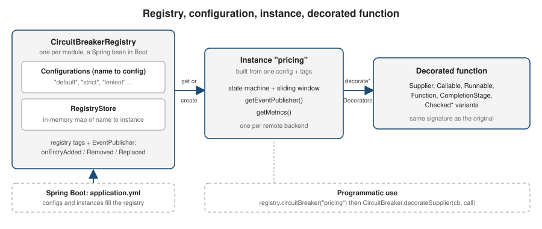

Registries, Configuration & Decorators
|
This content was generated with the assistance of AI and should be verified against the official documentation before being relied on in production. |
Every Resilience4j module is built the same way: a configuration describes the behaviour, a registry creates and caches named instances from configurations, and an instance decorates a function. Learn the model once and the five core modules, the Spring Boot properties and the Actuator output all follow from it. This page covers that model; the module pages cover what each configuration means. It was written against Resilience4j 2.4.0, Spring Boot 4.1.x, Spring Framework 7.0.x and Java 21 and verified on 4 October 2026. Nothing here depends on Spring Boot except the final section, and the Java API is identical on Boot 3.5.x.

The snippets use the circuit breaker because it has the richest API; the same shapes exist for Retry,
RateLimiter, Bulkhead, ThreadPoolBulkhead and TimeLimiter. Imports are omitted for brevity: the types are in
io.github.resilience4j.<module> (for example io.github.resilience4j.circuitbreaker.CircuitBreakerRegistry).
Registries
A registry is a thread-safe factory and cache of named instances. There is one registry type per module:
| Registry | Creates | Default configuration type |
|---|---|---|
|
|
|
|
|
|
|
|
|
|
|
|
|
|
|
|
|
|
There are three ways to create one: ofDefaults() (the library’s defaults), of(config) (your configuration as the
default) and custom() (a builder, shown below). Asking a registry for a name creates the instance on first use and
returns the same instance every time after:
CircuitBreakerRegistry defaults = CircuitBreakerRegistry.ofDefaults();
CircuitBreakerConfig base = CircuitBreakerConfig.custom()
.failureRateThreshold(50)
.slidingWindowSize(20)
.waitDurationInOpenState(Duration.ofSeconds(30))
.build();
CircuitBreakerRegistry registry = CircuitBreakerRegistry.of(base);
CircuitBreaker pricing = registry.circuitBreaker("pricing"); // created from `base`
CircuitBreaker same = registry.circuitBreaker("pricing"); // the same instance
assertThat(same).isSameAs(pricing);
// the library defaults, for comparison: slidingWindowSize is 100
assertThat(defaults.circuitBreaker("x").getCircuitBreakerConfig().getSlidingWindowSize()).isEqualTo(100);Source: Resilience4j: CircuitBreaker (the CircuitBreakerRegistry
section) and CircuitBreaker examples. The other registries are documented
on Retry, RateLimiter,
Bulkhead and TimeLimiter.
The other registries work the same way:
RetryRegistry retries = RetryRegistry.of(
RetryConfig.custom().maxAttempts(4).build());
RateLimiterRegistry limiters = RateLimiterRegistry.of(
RateLimiterConfig.custom()
.limitForPeriod(5)
.limitRefreshPeriod(Duration.ofSeconds(1))
.build());
BulkheadRegistry bulkheads = BulkheadRegistry.of(
BulkheadConfig.custom().maxConcurrentCalls(10).build());
ThreadPoolBulkheadRegistry pools = ThreadPoolBulkheadRegistry.of(
ThreadPoolBulkheadConfig.custom().coreThreadPoolSize(2).maxThreadPoolSize(4).build());
TimeLimiterRegistry timeLimiters = TimeLimiterRegistry.of(
TimeLimiterConfig.custom().timeoutDuration(Duration.ofSeconds(2)).build());
Retry isbnRetry = retries.retry("isbn");
RateLimiter isbnLimit = limiters.rateLimiter("isbn");
Bulkhead recsBulkhead = bulkheads.bulkhead("recommendations");
ThreadPoolBulkhead recsPool = pools.bulkhead("recommendations");
TimeLimiter pricingTimeout = timeLimiters.timeLimiter("pricing");Source: Resilience4j: Retry,
RateLimiter, Bulkhead
and TimeLimiter. Note that ThreadPoolBulkheadRegistry.bulkhead(name)
returns a ThreadPoolBulkhead, and that a thread-pool bulkhead’s maxThreadPoolSize must be at least its
coreThreadPoolSize (the library throws IllegalArgumentException otherwise).
The Cache module has no registry: a Cache wraps a JCache javax.cache.Cache you create yourself
(see Cache & Hedge).
Shared configurations
Most services have a few kinds of dependency, not one configuration per dependency. A registry therefore holds
named configurations alongside its instances. The one called default is used when you ask for an instance
without naming a configuration; you add others with addCircuitBreakerConfig on the builder, or addConfiguration on
a live registry, and ask for them by name.
CircuitBreakerConfig strict = CircuitBreakerConfig.from(base)
.failureRateThreshold(30)
.build();
CircuitBreakerRegistry registry = CircuitBreakerRegistry.custom()
.withCircuitBreakerConfig(base) // becomes the "default" configuration
.addCircuitBreakerConfig("strict", strict) // a named, shared configuration
.build();
// add one later, to a live registry
registry.addConfiguration("lenient", CircuitBreakerConfig.from(base).failureRateThreshold(80).build());
CircuitBreaker isbn = registry.circuitBreaker("isbn", "strict"); // by configuration name
CircuitBreaker reviews = registry.circuitBreaker("reviews", "lenient");
CircuitBreaker legacy = registry.circuitBreaker("legacy", strict); // or pass a config object directly
CircuitBreaker lazy = registry.circuitBreaker("lazy", () -> strict); // or a Supplier, evaluated only if the instance is new
assertThat(registry.getConfiguration("strict")).isPresent();Rules worth knowing:
-
"default"is reserved.addCircuitBreakerConfig("default", …)throwsIllegalArgumentException("You cannot add another configuration with name 'default'"); set the default withwithCircuitBreakerConfig(…)instead. -
An instance is created once. Asking for
"isbn"again with a different configuration returns the existing instance with its original configuration (verified: the 30 per cent threshold passed the second time was ignored), so do not use that to change a running instance’s behaviour. -
Asking for a configuration name that does not exist throws
ConfigurationNotFoundException.
Source: Resilience4j: CircuitBreaker (CircuitBreakerRegistry,
addConfiguration) and the v2.4.0
CircuitBreakerRegistry source for the reserved name.
Deriving a configuration: from(base)
Each XxxConfig has a from(existing) method that starts a new builder pre-filled with every value of an existing
configuration. It is how to express "the default, but stricter" without repeating every property:
from(base) copies, then overridesCircuitBreakerConfig strict = CircuitBreakerConfig.from(base)
.failureRateThreshold(30)
.build();
assertThat(strict.getSlidingWindowSize()).isEqualTo(20); // inherited from base
assertThat(strict.getFailureRateThreshold()).isEqualTo(30f); // overriddenThe Spring Boot YAML has the same idea under a different name: baseConfig on an instance (see the last section).
Source: Resilience4j: CircuitBreaker (CircuitBreakerConfig.from).
Tags
Tags are key/value labels attached to the registry and to each instance. They carry no behaviour; they appear on the Micrometer meters as tags, so they let you slice metrics by team, tier or environment. Tags given for one instance are merged over the registry’s tags.
CircuitBreakerRegistry registry = CircuitBreakerRegistry.custom()
.withCircuitBreakerConfig(base)
.addCircuitBreakerConfig("strict", strict)
.withTags(Map.of("service", "bookshelf"))
.build();
CircuitBreaker isbn = registry.circuitBreaker("isbn", "strict", Map.of("team", "catalog"));
isbn.getTags(); // {service=bookshelf, team=catalog}
registry.getTags(); // {service=bookshelf}Source: Resilience4j: CircuitBreaker. Tags are exposed through Micrometer, as described in Resilience4j: Micrometer.
A custom RegistryStore
By default a registry keeps its instances in a ConcurrentHashMap-backed in-memory store. The RegistryStore<E>
interface (in io.github.resilience4j.core) is the extension point: it has six methods (computeIfAbsent,
putIfAbsent, find, remove, replace, values), and withRegistryStore(…) on the builder plugs in yours.
Typical reasons are to wrap storage with eviction, or to observe every lookup.
Map<String, CircuitBreaker> backing = new ConcurrentHashMap<>();
RegistryStore<CircuitBreaker> store = new RegistryStore<>() {
public CircuitBreaker computeIfAbsent(String key, Function<? super String, ? extends CircuitBreaker> f) {
return backing.computeIfAbsent(key, f);
}
public CircuitBreaker putIfAbsent(String key, CircuitBreaker value) { return backing.putIfAbsent(key, value); }
public Optional<CircuitBreaker> find(String key) { return Optional.ofNullable(backing.get(key)); }
public Optional<CircuitBreaker> remove(String key) { return Optional.ofNullable(backing.remove(key)); }
public Optional<CircuitBreaker> replace(String key, CircuitBreaker value) {
return Optional.ofNullable(backing.replace(key, value));
}
public Collection<CircuitBreaker> values() { return backing.values(); }
};
CircuitBreakerRegistry registry = CircuitBreakerRegistry.custom()
.withCircuitBreakerConfig(CircuitBreakerConfig.ofDefaults())
.withRegistryStore(store)
.build();Source: the v2.4.0
RegistryStore source. The extension point is not described on readme.io. The thread-safety of the store is yours to
keep: a registry may call computeIfAbsent from many threads.
Registry events
A registry publishes an event when an instance is added, removed or replaced. Use them to react to instances created
dynamically (for example to attach a listener to every new breaker). There are two equivalent hooks: a
RegistryEventConsumer passed when you build the registry, which sees events from the start, and the registry’s
EventPublisher, which you subscribe to afterwards.
List<String> log = new ArrayList<>();
CircuitBreakerRegistry registry = CircuitBreakerRegistry.custom()
.withCircuitBreakerConfig(CircuitBreakerConfig.ofDefaults())
.addRegistryEventConsumer(new RegistryEventConsumer<CircuitBreaker>() {
public void onEntryAddedEvent(EntryAddedEvent<CircuitBreaker> e) { log.add("added " + e.getAddedEntry().getName()); }
public void onEntryRemovedEvent(EntryRemovedEvent<CircuitBreaker> e) { log.add("removed " + e.getRemovedEntry().getName()); }
public void onEntryReplacedEvent(EntryReplacedEvent<CircuitBreaker> e) { log.add("replaced " + e.getNewEntry().getName()); }
})
.build();
registry.getEventPublisher()
.onEntryAdded(e -> log.add("pub added " + e.getAddedEntry().getName()))
.onEntryRemoved(e -> log.add("pub removed " + e.getRemovedEntry().getName()))
.onEntryReplaced(e -> log.add("pub replaced " + e.getNewEntry().getName()));
registry.circuitBreaker("pricing");
registry.replace("pricing", CircuitBreaker.ofDefaults("pricing"));
registry.remove("pricing");
// log: [added pricing, pub added pricing, replaced pricing, pub replaced pricing,
// removed pricing, pub removed pricing]Source: the v2.4.0
Registry source (EventPublisher.onEntryAdded / onEntryRemoved / onEntryReplaced) and
Resilience4j: CircuitBreaker.
Decorating functions
An instance does not run your code; it decorates it. A decorator takes a functional interface and returns another of
the same type, with the pattern applied around the call. Because the signature does not change, a decorated function
can replace the original anywhere. Each module has decorateXxx static methods (and the instance has executeXxx
shortcuts) for the functional types:
| Functional type | Decorate method | Shortcut that runs it now |
|---|---|---|
|
|
|
|
|
|
|
|
|
|
|
(none) |
|
|
|
|
|
|
The Checked* interfaces (in io.github.resilience4j.core.functions) are the same as their java.util.function
cousins except that they may throw Throwable, so you can decorate code that throws checked exceptions without wrapping
them.
CircuitBreaker cb = CircuitBreaker.ofDefaults("pricing");
Supplier<String> supplier = CircuitBreaker.decorateSupplier(cb, () -> "supplier");
Callable<String> callable = CircuitBreaker.decorateCallable(cb, () -> "callable");
Runnable runnable = CircuitBreaker.decorateRunnable(cb, () -> { });
Function<String, String> function = CircuitBreaker.decorateFunction(cb, String::toUpperCase);
Supplier<CompletionStage<String>> stage = CircuitBreaker.decorateCompletionStage(
cb, () -> CompletableFuture.supplyAsync(() -> "stage"));
CheckedSupplier<String> checked = CircuitBreaker.decorateCheckedSupplier(cb, () -> {
if (offline) throw new IOException("offline"); // a checked exception, no wrapping needed
return "checked";
});
String direct = cb.executeSupplier(() -> "run it now");The same decorators exist on Retry, RateLimiter, Bulkhead, ThreadPoolBulkhead and TimeLimiter (for
example Retry.decorateSupplier(retry, supplier)). Calls that go through a CompletionStage are recorded when the stage
completes, not when the supplier returns, which matters for timing and for the thread the callbacks run on.
Source: Resilience4j: CircuitBreaker examples (decorating a
functional interface) and Retry examples. The Checked* types are in the
v2.4.0
resilience4j-core functions package.
Combining decorators by hand
Decorators are ordinary functions, so they nest. The last one applied is the outermost:
Supplier<String> call = () -> pricingClient.fetch(isbn);
Supplier<String> guarded = Retry.decorateSupplier(retry,
CircuitBreaker.decorateSupplier(circuitBreaker, call)); // Retry outside, CircuitBreaker insideSource: Resilience4j: Getting Started (decorating a functional interface by hand).
Here every retry attempt goes through the circuit breaker and is recorded by it, and an open breaker makes the retry’s next attempt fail immediately. Putting them the other way round gives a different behaviour. The effects of the order are the subject of Fallbacks & Composition.
The Decorators builder
Nesting by hand quickly becomes unreadable. Decorators (in resilience4j-all) is a fluent builder that applies the
decorators for you: start with Decorators.ofSupplier(…) (or ofCallable, ofRunnable, ofFunction,
ofCompletionStage and the ofChecked… variants), add with… calls, and finish with decorate() (returns the
function) or get() / call() / run() (runs it). Each with… call wraps everything before it, so the last is
outermost and withFallback is typically last.
CircuitBreaker cb = CircuitBreaker.of("pricing",
CircuitBreakerConfig.custom().slidingWindowSize(2).minimumNumberOfCalls(2).failureRateThreshold(50).build());
Retry retry = Retry.of("pricing",
RetryConfig.custom().maxAttempts(3).waitDuration(Duration.ofMillis(5)).build());
Supplier<String> decorated = Decorators.ofSupplier(failingPricingCall)
.withCircuitBreaker(cb) // innermost
.withRetry(retry) // wraps the breaker
.withFallback(
List.of(IllegalStateException.class, CallNotPermittedException.class),
t -> "fallback:" + t.getClass().getSimpleName()) // outermost
.decorate();
String first = decorated.get();
// "fallback:CallNotPermittedException": the call failed twice, the breaker opened,
// and the third retry attempt was rejected by the open breaker.Running this against a call that always fails, the backend is invoked exactly twice. The retry makes three attempts,
but the breaker opens after the second recorded failure (window of 2) and rejects the third without reaching the
backend. The fallback receives CallNotPermittedException and answers.
Decorators offers:
-
withCircuitBreaker,withRetry,withRateLimiter(optionally with a permit count),withBulkhead,withTimerandwithCacheon the synchronous builders; -
withThreadPoolBulkhead,withTimeLimiterandwithRetry(retry, scheduler)on theCompletionStagebuilder (these need aScheduledExecutorService), because those modules are asynchronous by nature; -
several
withFallbackoverloads: for any exception (Function<Throwable, T>), for a list of exception types, for a single exception type, for a result predicate, and aBiFunctionthat sees the result and the exception.
ScheduledExecutorService scheduler = Executors.newSingleThreadScheduledExecutor();
CompletableFuture<String> result = Decorators.ofSupplier(() -> "hello")
.withThreadPoolBulkhead(pools.bulkhead("recommendations"))
.withTimeLimiter(timeLimiters.timeLimiter("pricing"), scheduler)
.withCircuitBreaker(cb)
.withFallback(
List.of(TimeoutException.class, CallNotPermittedException.class, BulkheadFullException.class),
t -> "fallback")
.get()
.toCompletableFuture();withThreadPoolBulkhead converts the supplier into a CompletionStage builder, so everything after it is an
asynchronous decorator. Decorators is a convenience: it adds no behaviour that the individual decorateXxx
methods lack, and in Spring Boot the annotations apply the patterns in a fixed order that can only be changed globally, with the
*AspectOrder properties.
Source: the v2.4.0 README (the Decorators
builder in resilience4j-all), Resilience4j: CircuitBreaker examples
and the v2.4.0
Decorators source, which lists every with… overload.
Per-instance events: EventPublisher, onEvent, CircularEventConsumer
Every instance publishes a stream of events: a call succeeded, failed, was rejected, a state changed. Subscribe through
the instance’s getEventPublisher(). There are two levels:
-
onEvent(consumer)receives every event of that instance, typed as the module’s base event (CircuitBreakerEvent); -
typed methods receive one kind: for the circuit breaker
onSuccess,onError,onIgnoredError,onStateTransition,onReset,onCallNotPermitted,onFailureRateExceededandonSlowCallRateExceeded. The other modules have their own sets: Retry hasonRetry,onSuccess,onErrorandonIgnoredError; RateLimiter hasonSuccessandonFailure; Bulkhead hasonCallPermitted,onCallRejectedandonCallFinished; TimeLimiter hasonSuccess,onErrorandonTimeout.
Events are delivered synchronously on the thread that made the call, so a consumer must be fast and must not throw.
CircularEventConsumer<T> (in resilience4j-consumer) is a ready-made consumer: a fixed-size ring buffer that keeps the
last N events, readable through getBufferedEvents(). It is what backs the *events Actuator endpoints, and it is a
simple way to expose recent history in your own diagnostics.
CircuitBreaker cb = CircuitBreaker.of("pricing",
CircuitBreakerConfig.custom().slidingWindowSize(2).minimumNumberOfCalls(2).build());
CircularEventConsumer<CircuitBreakerEvent> buffer = new CircularEventConsumer<>(5);
cb.getEventPublisher().onEvent(buffer::consumeEvent);
cb.getEventPublisher()
.onSuccess(e -> log.info("pricing ok in {} ms", e.getElapsedDuration().toMillis()))
.onError(e -> log.warn("pricing failed: {}", e.getThrowable().getMessage()))
.onStateTransition(e -> log.warn("pricing breaker: {}", e.getStateTransition()))
.onCallNotPermitted(e -> log.warn("pricing call rejected"));
for (int i = 0; i < 3; i++) {
try { cb.executeSupplier(() -> { throw new IllegalStateException("x"); }); }
catch (RuntimeException ignored) { }
}
// buffer.getBufferedEvents() event types: ERROR, ERROR, FAILURE_RATE_EXCEEDED, STATE_TRANSITION, NOT_PERMITTED
// the typed consumers logged: error x, error x, "State transition from CLOSED to OPEN", rejectedSource: Resilience4j: CircuitBreaker (the Consume emitted
RegistryEvents and CircuitBreakerEvents sections) and
the v2.4.0
CircularEventConsumer source. The events each module emits, and the Actuator endpoints that publish them, are
listed on the module pages and in Observability.
Instance-management best practices
The Resilience4j README has a section on this, and it is the single most useful piece of design advice in the project: one instance, with its own unique name, for each remote service or backend you protect (the "golden rule" of the README’s instance-management section at v2.4.0). The reasoning is that each instance owns state:
-
Metrics per backend. Instance names become the
nametag on every meter, so one instance per backend shows which dependency is struggling. -
Failure isolation. If pricing fails, the breaker protecting reviews must not open.
-
Independent configuration. Different backends need different thresholds, limits and timeouts.
The pattern-by-pattern rule from the README:
| Pattern | Can share an instance? | Should? | Why |
|---|---|---|---|
|
No |
No |
State is specific to one backend. Sharing makes one backend’s failures open the circuit for all. |
|
No |
No |
The concurrency limit exists to isolate one backend from the others. |
|
No |
No |
Quotas are per backend; sharing defeats the purpose. |
|
Yes |
No |
Stateless between calls, so it is safe to share, but separate instances give per-backend metrics. |
|
Yes |
No |
Same: safe to share, better observed separately. |
|
Depends |
Depends |
Share only if the cached data is truly identical. |
The wrong version of the Bookshelf is easy to write, and the failure is dramatic. With one shared breaker, an outage in
pricing-service takes reviews-service calls down with it:
CircuitBreaker shared = CircuitBreaker.of("shared",
CircuitBreakerConfig.custom().slidingWindowSize(2).minimumNumberOfCalls(2).build());
for (int i = 0; i < 2; i++) {
try { shared.executeSupplier(() -> { throw new IllegalStateException("pricing down"); }); }
catch (RuntimeException ignored) { }
}
// reviews-service is perfectly healthy, but the shared breaker is open:
assertThatThrownBy(() -> shared.executeSupplier(() -> "reviews is healthy"))
.isInstanceOf(CallNotPermittedException.class);The right version has one instance per backend, taken from a registry, each with the configuration that suits it.
CircuitBreaker pricingCb = registry.circuitBreaker("pricing");
CircuitBreaker isbnCb = registry.circuitBreaker("isbn", "strict");
CircuitBreaker recsCb = registry.circuitBreaker("recommendations", "lenient");
CircuitBreaker reviewsCb = registry.circuitBreaker("reviews", "lenient");
Retry isbnRetry = retries.retry("isbn");
RateLimiter isbnLimiter = limiters.rateLimiter("isbn");
ThreadPoolBulkhead recsPool = pools.bulkhead("recommendations");Source: the v2.4.0 README (the "Best Practices" section on instance management); it is not on readme.io.
Two corollaries. Name instances after the backend, not the method or the class: a single backend called from five
methods is still one instance. And in Spring Boot, the annotation’s name is the instance name, so two methods that
use name = "pricing" share one breaker, which is what you want when they hit the same service.
Registries in Spring Boot
In Spring Boot you rarely build a registry; the starter creates one per module as a Spring bean, fills it from
application.yml, and hands you the same objects to inject. The model above is unchanged, with some additions.
-
One bean per module.
CircuitBreakerRegistry,RetryRegistry,RateLimiterRegistry,BulkheadRegistry,ThreadPoolBulkheadRegistryandTimeLimiterRegistrycan all be injected. -
YAML maps onto configurations. Entries under
resilience4j.<module>.configs.<name>become named configurations, and entries under.instances.<name>become instances created at startup. An instance names its configuration withbaseConfig, and may override any property. Thedefaultentry underconfigsis the registry’s default configuration, which is also used for instances that are not in the YAML. -
Instances in YAML are created eagerly. After startup,
registry.getAllCircuitBreakers()already containspricing; an unlisted name such asregistry.circuitBreaker("dynamic")creates a new instance from the default configuration. -
Customizers. A bean of type
CircuitBreakerConfigCustomizer(and its siblingsRetryConfigCustomizer, and so on) adjusts the builder for a named instance after the YAML is applied. It is the route to builder-only options. -
Registry event consumers. Any
RegistryEventConsumer<CircuitBreaker>bean is added to the registry, and Boot itself uses the registry’s events to give every instance aCircularEventConsumer(sized byeventConsumerBufferSize, default 100) held in anEventConsumerRegistry<CircuitBreakerEvent>bean, which feeds the/actuator/circuitbreakereventsendpoint.
@Configuration
class ResilienceBeans {
@Bean
CircuitBreakerConfigCustomizer pricingCustomizer() {
return CircuitBreakerConfigCustomizer.of("pricing",
builder -> builder.waitDurationInOpenState(Duration.ofSeconds(42)));
}
@Bean
RegistryEventConsumer<CircuitBreaker> logNewBreakers() {
return new RegistryEventConsumer<>() {
public void onEntryAddedEvent(EntryAddedEvent<CircuitBreaker> e) {
log.info("circuit breaker created: {}", e.getAddedEntry().getName());
}
public void onEntryRemovedEvent(EntryRemovedEvent<CircuitBreaker> e) { }
public void onEntryReplacedEvent(EntryReplacedEvent<CircuitBreaker> e) { }
};
}
}At startup this logs the creation of every breaker declared in the YAML, and of any breaker created later. The
customizer takes effect (in the verified run the pricing breaker’s wait duration became 42 s), and
EventConsumerRegistry<CircuitBreakerEvent>.getEventConsumer("pricing") returns the instance’s event buffer.
Source: Resilience4j: Spring Boot 2 & 3 (configs, instances,
baseConfig, customizers) and the
v2.4.0
CircuitBreakerConfiguration source (event-consumer registration and the default buffer size). All the YAML keys
are listed in Spring Boot Configuration, and
using the injected registries in application code is in
Programmatic Usage.
Registries without Spring: resilience4j-commons-configuration
Outside Spring Boot there is no application.yml binding, but you can still configure registries from a file.
resilience4j-commons-configuration reads a Resilience4j configuration (properties or YAML) through
Apache Commons Configuration and builds a registry from
it. It reuses the same property names and parsing as the Spring Boot starters (it builds on
resilience4j-framework-common), so a YAML file written for Boot works here.
The module is not in resilience4j-bom 2.4.0, so give it an explicit version:
<dependency>
<groupId>io.github.resilience4j</groupId>
<artifactId>resilience4j-commons-configuration</artifactId>
<version>2.4.0</version>
</dependency>resilience4j:
circuitbreaker:
configs:
default:
slidingWindowSize: 20
failureRateThreshold: 50
waitDurationInOpenState: PT30S
instances:
pricing:
baseConfig: default
failureRateThreshold: 40
retry:
instances:
isbn:
maxAttempts: 3
waitDuration: PT0.5SConfiguration config = new FileBasedConfigurationBuilder<>(YAMLConfiguration.class)
.configure(new Parameters().fileBased()
.setListDelimiterHandler(new DefaultListDelimiterHandler(','))
.setFileName("resilience.yaml"))
.getConfiguration();
CircuitBreakerRegistry breakers = CommonsConfigurationCircuitBreakerRegistry.of(
config, new CompositeCustomizer<>(List.of()));
RetryRegistry retries = CommonsConfigurationRetryRegistry.of(
config, new CompositeCustomizer<>(List.of()));
CircuitBreaker pricing = breakers.circuitBreaker("pricing", "pricing"); // instance name, configuration name
Retry isbn = retries.retry("isbn", "isbn");Three behaviours differ from Spring Boot, and the last is easy to miss:
-
Durations are ISO-8601 (
PT30S), as in the module’s own test files, and the same keys as the Boot properties apply. -
There is a registry factory for five of the six registries:
CommonsConfigurationCircuitBreakerRegistry,CommonsConfigurationRetryRegistry,CommonsConfigurationRateLimiterRegistry,CommonsConfigurationBulkheadRegistryandCommonsConfigurationTimeLimiterRegistry(there is none for the thread-pool bulkhead). Each takes aCompositeCustomizerso you can still adjust builders in code. -
Each
instancesentry is registered as a named configuration, not as a ready-made instance. Asking forbreakers.circuitBreaker("pricing")returns an instance built from the registry’s default, ignoring the instance’s own settings. Ask with the configuration name,breakers.circuitBreaker("pricing", "pricing"), as above. In the run that verified this page the first form returned a 100-call window and the second the configured 20-call window with a 40 per cent threshold.
The module is niche: it exists for non-Spring applications and is lightly documented. If you are on Spring Boot, use the starter.
Source: the v2.4.0
resilience4j-commons-configuration source and tests; the module has no readme.io page.
What changed recently
-
2.0.1 added
resilience4j-spring6andresilience4j-spring-boot3; the registry model did not change. -
2.4.0 adds
resilience4j-spring-boot4. The registry, configuration andDecoratorsAPIs described here are unchanged from 2.x. The release notes for 2.4.0 itself are only in the GitHub release;RELEASENOTES.adocat the 2.4.0 tag stops at 2.3.0. -
resilience4j-bom2.4.0 does not manageresilience4j-spring-boot4,-hedgeor-commons-configuration; pin their versions explicitly.
References
-
Resilience4j README at v2.4.0 (instance-management best practices,
Decorators) -
resilience4j-coresource at v2.4.0 (Registry,RegistryStore,EventPublisher)